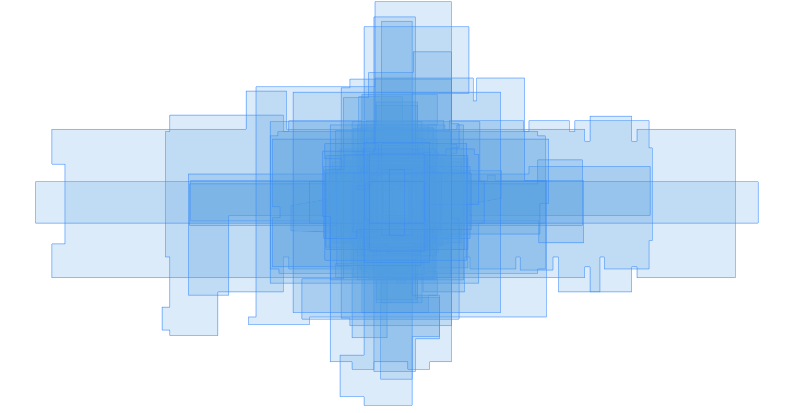

How quickly can a building's architectural program change? How do we efficiently "reprogram" architectural spaces? How should we respond, for example, if a commercial hotel suddenly needs to serve as a field hospital, as required during COVID-19?
We might assume that architectural function follows form - that the shape and size of spaces constrains their use. I can repurpose a spare bedroom to a home office, but might struggle to turn a hallway into a conference room. If we accept this assumption (at least within vernacular design), then grouping building spaces by their geometric “similarity” provides a starting point to explore alternative programs.
Below are floor plans for a typical office building and medical clinic, both taken from architectural models produced by the National Institute of Building Science. Below each floor plan is a slider that controls the “similarity” tolerance between any two spaces. As you move the slider, notice how the colors of the spaces change. By monitoring how the groups change as you move the slider, you can identify collections of similarly sized and shaped spaces. By mapping each color to an architectural function (”patient room”, “meeting space”, “individual workspace”), you have the beginnings of a tool for rapidly exploring architectural reprogramming. This may be especially useful in buildings that have limited as-built documentation, as the analysis relies only on room boundary geometry.
Notes on the implementation
It is worth exploring the implementation of these demos to understand their assumptions and opportunities for improvement.
The system stores each floor plan as a GeoJSON file, with every room or space as a GeoJSON feature. All floor plans are actually projected maps rendered at a (semi)arbitrary location on Earth. See the included script to see how I generated these floor plans directly from Autodesk Revit.
Here’s the heart of the classification algorithm:
function components(GeoJSON, threshold) {
const rooms = [];
for (let feature of GeoJSON.features) {
rooms.push(new GeoJSONRoom(feature));
}
const partition = new UF(rooms.length);
for (let [Ai, Bi] of pairwise(iota(rooms.length), iota(rooms.length))) {
const [A, B] = [rooms[Ai], rooms[Bi]];
const dist = Math.max(A.distanceTo(B), B.distanceTo(A));
if (dist < threshold) {
partition.union(Ai, Bi);
}
}
for (let Ri in rooms) {
rooms[Ri].setComponent(partition.find(Ri));
}
return [GeoJSON, partition.uniqueParents().size]
}
In words: given a GeoJSON floor plan and a floating point “similarity threshold”, the algorithm:
- Generates a “room” object for each room boundary in the floor plan
- Does some bookkeeping to set up a union-find partition over the set of rooms. It uses this later to calculate unique groups.
- For every pair of rooms, computes the Hausdorff distance between their boundary points. Because the Hausdorff distance provides a metric for the “similarity” between two sets, by letting the set elements be room boundary coordinates, we gain a similarity measure between room boundaries.
- If the Hausdorff distance is less than the provided threshold, the algorithm uses union-find to group pairs of elements in constant time. The pairwise analysis of rooms has been sufficient for all testing I’ve done to date, as most floor plans tested never included more than several hundred unique rooms.
- After classifying all the rooms into unique groups (represented by an integer), we pass the augmenting GeoJSON back to the main view, which rerenders the floor plan using a simple component-index-to-color mapping.
Opportunities for improvement
First, notice how the constructor of GeoJSONRoom translates the room centroid to the origin. This ensures the Hausdorff distance is always calculated relative to the same fixed point. The core algorithm always "sees" floor plans as a set of rooms aligned by their centroids:
A cleaner approach might be to implement these translations as matrix transformations (represented by Transformation objects), so every function that mutates the GeoJSON geometry can restore them before returning to its caller. I haven’t had a need for this yet.
Second, the current algorithm doesn’t apply affine transformation to room boundaries when computing the similarity metric. This means two rooms with the same shape and size but different orientations may be classified as distinct for a certain threshold range.
A simple (but inefficient) solution would take match pairs of room boundaries across a range of transformations (e.g., rotation by 90 degrees) instead of the origin-normalized approach taken here. More formally, for two room boundaries \(A = {\left \{ a_1, a_2, ..., a_n \right \}}\) and \(B = {\left \{ b_1, b_2, ..., b_n \right \}}\), the original Hausdorff distance \(\delta(A, B) = \max_{a \in A}\min_{b \in B} || a - b ||\) becomes \(\delta{'}(A, B) = \min_{t \in T}\max_{a \in A}\min_{b \in B} || a - t(b) ||\) for all listed transformations \(t \in T\).